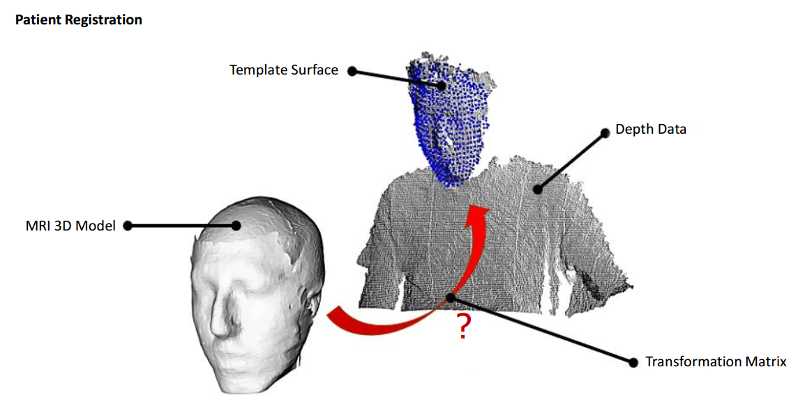
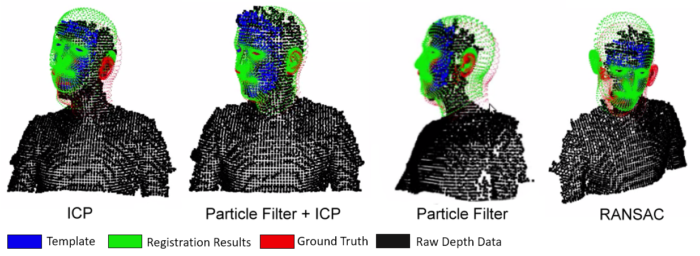
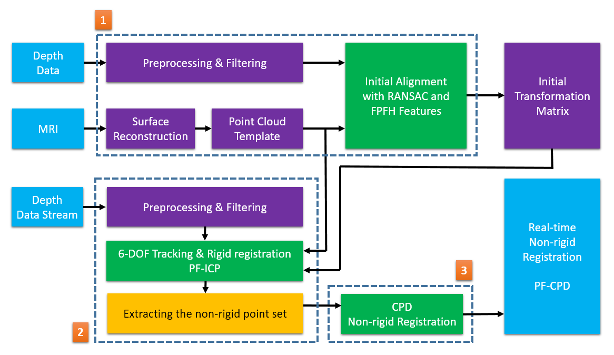

I propose a novel approach for real-time tracking and registration of point clouds with partial non-rigid deformation. Coherent Point Drift (CPD) algorithm registers point clouds accurately, however it fails in high-dimensional, real-time scenarios. To reduce the dimensionality, we apply the CPD only to regions where the non-rigid deformation of target occurs. we extract those regions by 1) registering the target rigidly using a tracking-based Iterative Closest Point (ICP) algorithm and 2) extracting the outliers using k-dimensional tree. we evaluate the performance of my approach on point clouds acquired using Microsoft Kinect v2. my results show that we achieve accurate registrations in real-time.
A bit faster non-rigid registration (Technical Report)...
About the project:
- This a technical report from my master thesis
- Many thanks to Sahand Sharifzade from Technical University of Munich (Vision Group) for his great advisement
- Work still is in progress
For initial patient registration, two surfaces extracted from preoperative medical model using Slicer software and intraoperative depth stream using Kinect v2 were matched initially using a RANSAC on Fast Point Feature Histogram (FPFH) algorithm . As PFH signatures rely on both xyz 3D data as well as surface normals.For speedup the entire process, we used Fast Point Feature Histograms (FPFH), that reduces the computational complexity, while still retaining most of the discriminative power of the PFH.
Patient registration procedureTracking 3D objects in continuous point cloud data sequences is an important research topic for mobile robots: it allows robots to monitor the environment and make decisions and adapt their motions according to the changes in the world. An example of such a typical application is visual serving, with its key challenge to estimate the three dimensional pose of an object in real-time. I use the 6dof object tracking solution from PCL library. The pcltracking library contains data structures and mechanism for 3D tracking which uses Particle Filter Algorithm. This tracking will enable you to implement 6D-pose (position and rotation) tracking which is optimized to run in real time. At (t = t - 1) At first, using previous Particles information about position and rotation, it will predict each position and rotation of them at the next frame. Next, I calculate weights of those particles with the likelihood formula below. (you can select which likelihood function you use) Finally, we use the evaluate function which compares real point cloud data from depth sensor with the predicted particles, and resample particles. Particle filters or Sequential Monte Carlo (SMC) methods are a set of genetic-type particle Monte Carlo methodologies to solve filtering problem arising in signal processing and Bayesian statistical inference. The filtering problem consists of estimating the internal states in dynamical systems when partial observations are made, and random perturbations are present in the sensors as well as in the dynamical system. The objective is to compute the conditional probability (a.k.a. posterior distributions) of the states of some Markov process, given some noisy and partial observations. The term "particle filters" was first coined in 1996 by Del Moral in reference to mean field interacting particle methods used in fluid mechanics since the beginning of the 1960s. The terminology "sequential Monte Carlo" was proposed by Liu and Chen in 1998. Particle filtering methodology uses a genetic type mutation-selection sampling approach, with a set of particles (also called individuals, or samples) to represent the posterior distribution of some stochastic process given some noisy and/or partial observations. The state-space model can be nonlinear and the initial state and noise distributions can take any form required. Particle filter techniques provide a well-established methodology for generating samples from the required distribution without requiring assumptions about the state-space model or the state distributions. However, these methods do not perform well when applied to very high-dimensional systems.
Method ComparisionCoherent point drift (CPD) was introduced by Myronenko and Song. The algorithm takes a probabilistic approach to aligning point sets, similar to the GMM KC method. Unlike earlier approaches to non-rigid registration which assume a thin plate spline transformation model, CPD is agnostic with regard to the transformation model used. The point set M represents the Gaussian mixture model (GMM) centroids. When the two point sets are optimally aligned, the correspondence is the maximum of the GMM posterior probability for a given data point. To preserve the topological structure of the point sets, the GMM centroids are forced to move coherently as a group. The expectation maximization algorithm is used to optimize the cost function. Let there be M points in M and N points in S .
System OverviewIn this technical report we introduce a novel approach for non-rigid registration problem in patient registration procedures. My novel approach in comparison of other state of the art solutions perform better results in both speed and accuracy.For the future work we suggest to perform this algorithm to inner organs and medical images and discus for deformation of internal parts as we did not mention in this technical report. Also skin reconstruction will be next goal of project for augmented reality applications. This research has been founded and supported by Amirkabir Robotic Research Institute (ARRI) of Amirkabir University of Technology.